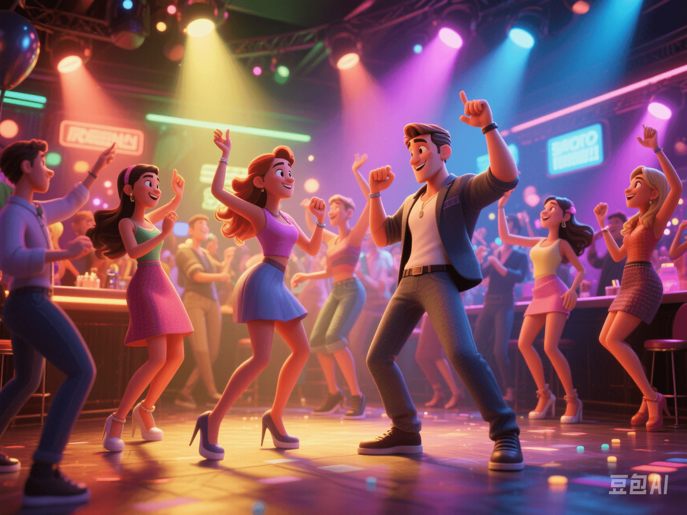

Love Without Limits? The Ethical Controversies and Emotional Truths of Open Relationships
PeaceLove.Top Insights :2025-04-13
💔 Introduction
"I love you, but I also want to explore others." This is a confession that appears more and more frequently in intimate relationships. In the digital age, the definition of intimate relationships has become more diverse. Besides traditional monogamy, more and more couples are trying so - called open relationships, which allow each other to have physical or emotional connections with others while maintaining a primary emotional bond. But can this "free" choice really be as pure, rational, and non - hurtful as imagined?
📊 Data: Poor Emotional Stability
According to a cross - sectional study in the Journal of Sex Research:
- Only 12% of open - relationship participants can maintain long - term emotional stability and mutual trust.
- Most people experience "emotional deviation", "blurred boundaries", and "concealment behaviors" within 6 months to 1 year.
This set of figures pierces the fantasy bubble of "open = mature = no jealousy".
🎭 Ethical Controversies: The Complex Costs Behind Freedom
🧠 1. The "Contract Crisis" of Emotions
Traditional one - to - one relationships are based on "exclusivity" and "exclusive commitment". Open relationships challenge this structure, raising questions like:
- "Can I still trust that you won't leave me for someone else?"
- "Can sex and love really be completely separated?"
Even when based on consensus, human beings' deep - seated need for emotional attachment often exceeds the boundaries that reason can control.
💢 2. Unequal "Openness"
In reality, many open relationships are actually dominated by one party and reluctantly accepted by the other. For example, a woman named A reluctantly agreed to an open relationship proposed by her boyfriend. She suffered from continuous anxiety and the comparison mentality intensified, which led to the earlier breakdown of the relationship. Psychologists call this an "emotionally submissive relationship structure", which is neither healthy nor sustainable.
💬 Real Voices from Netizens: Great Disagreements
🌟 Supportive Views
- "This is a choice among mature and rational people."
- "It breaks the repressive nature of monogamy."
- "It is actually more honest and prevents infidelity."
⚠️ Skeptical Views
- "Even if you agree, you often get hurt."
- "Human nature is not suitable for long - term non - exclusive relationships."
- "The so - called openness is actually an escape from real intimate responsibilities."
👀 The Influence of Contemporary Culture
On platforms like TikTok and Reddit, the topic "#EthicalNonMonogamy" has become popular. TV shows like Sex and the City and Open Marriage depict a modern urban picture of "freedom and desire". Psychologist Esther Perel proposed that "loyalty is no longer sexual exclusivity but emotional transparency". However, there is often only a thin line between "transparency" and "vulnerability".
✅ Questions to Ask Yourself
If you or your partner are considering an open relationship, ask yourself these questions first:
- 🧠 Can I handle the emotions of seeing my partner fall in love with someone else?
- 💬 Do we have the ability to communicate absolutely honestly?
- 🛡️ Are the boundaries I set really what I want in my heart?
- ⏳ Am I escaping relationship problems or pursuing self - growth?
❤️ Conclusion
An open relationship is neither an "advanced" emotional choice nor a "immature" mistake. It is a relationship model that requires a high degree of self - awareness, self - discipline, and honest communication. However, once it is mixed with control, compromise, suppression, and deception, it is no longer freedom but a slow - acting relationship suicide. Can an open relationship be happy? Maybe. But it is more likely to be a harsh "stress test" for the health of a relationship.